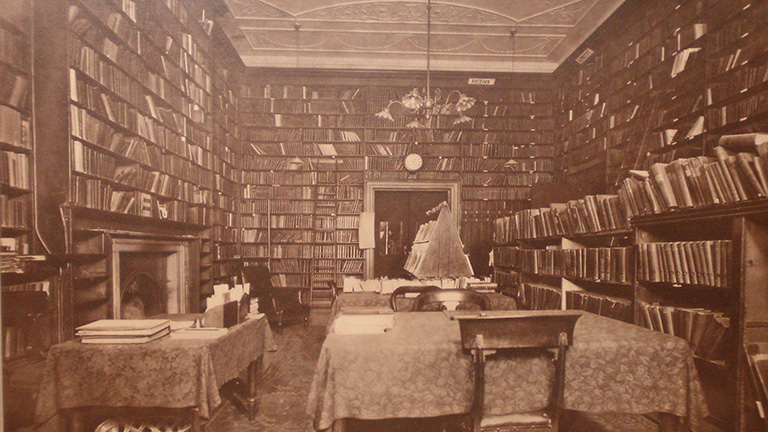

History of The London Library
Early Origins
The London Library was established in 1841 at a time when there were no lending libraries in London and before state-funded libraries existed. Frustrated by being unable to borrow books in London, author Thomas Carlyle began gathering support for a lending library and created a founding committee in April 1840 to oversee the work of raising launch funds. Chaired by Lord Lyttleton, its members included John Forster (Charles Dickens’ greatest friend and unofficial business manager), MP William Gladstone, poet and politician Richard Monckton Milnes, diplomat William Christie and biographer James Spedding.
The committee’s year long drive for funds was met with the contribution of 382 founder members whose support enabled the Library to open to the public on 3rd May 1841. Among the founding subscribers were Charles Dickens, John Stuart Mill, Harriet Martineau, radical MP Joseph Hume, future Prime Minister Lord John Russell, Dickens’ publishers William Chapman and Edward Hall and his illustrator for Barnaby Rudge and the Old Curiosity Shop, George Cattermole. Their backing enabled the Library to amass a starting collection of 2,000 books, handpicked by Gladstone, Mill and the Italian revolutionary Mazzini. Prince Albert donated £50, a number of books and became the Library’s first patron. The Library initially rented cheap premises in 45 Pall Mall (above a former Georgian gambling den) before moving to its more familiar location in St James’s Square five years later. From the outset it became a crucible for emerging talent and growing reputations. Charles Darwin joined within months of the Library opening, William Thackeray soon after. Since these early origins, thousands of the world’s greatest writers and thinkers have been intimately associated with this extraordinary institution, passionately supporting it and drawing heavily on its collection to produce their work.
Timeline
1841 The Library opens at 49 Pall Mall, London. The Earl of Clarendon is appointed inaugural President, WE Gladstone and Sir Edward Bunbury were on the first committee. John Cochrane is appointed first Librarian (and serves until 1852)
1842 An additional room is rented at 49 Pall Mall creating the Library’s first reading room. The collection reaches 13,000 volumes.
1845 The Library moves to its present location in St James’s Square.
